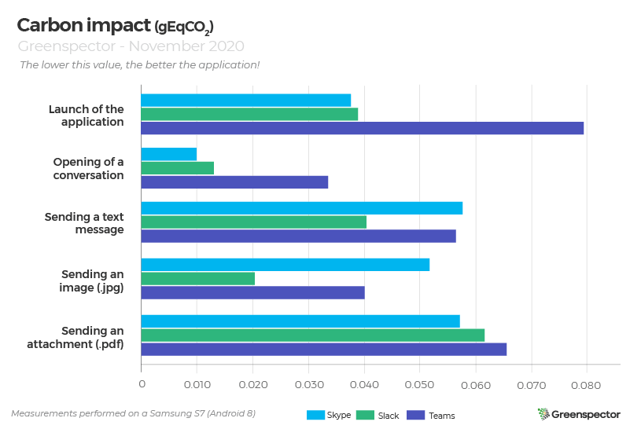
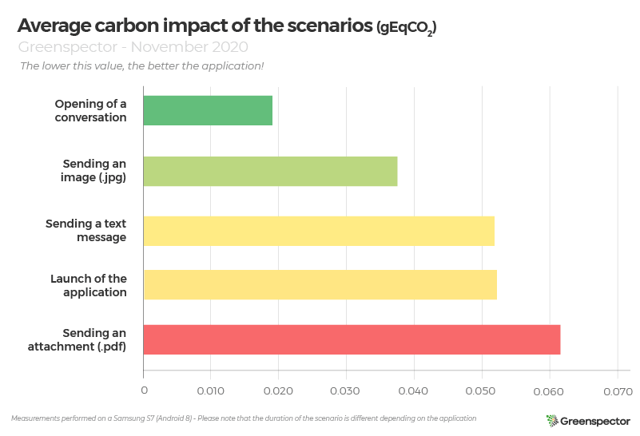
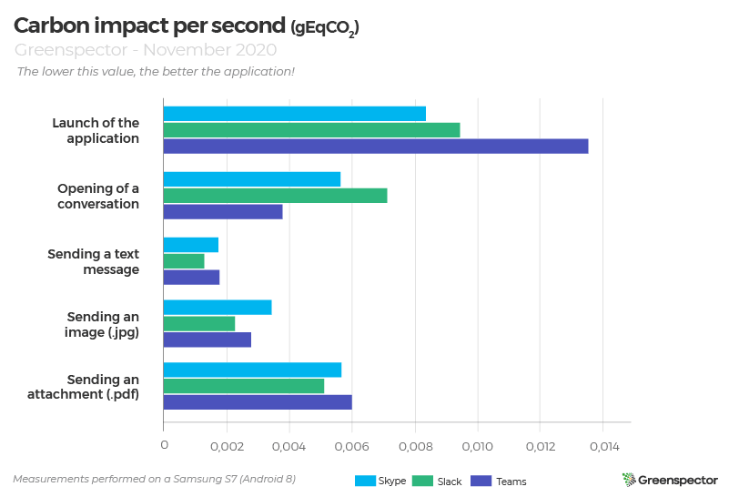
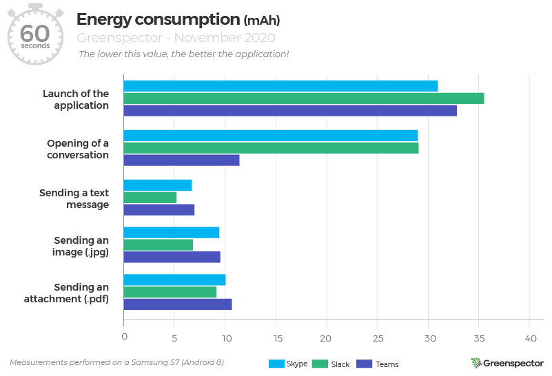

Introduction

Today and more than ever, communication is essential in business. Since the start of the Covid-19 crisis, many companies and employees have discovered remote work. This exceptional situation has led to a change in our interaction habits: making teams communicate effectively with each other, remotely, instantly. We decided to compare the 3 most popular direct messaging apps for business: Skype, Slack and Teams.
6 scenarios were carried out on the basis of an average user journey:
– Launch of the application
– Opening of a blank one-to-one conversation
– Sending a text message
– Send an image (.jpg)
– Sending an attachment (.pdf)
– Send an animated image or GIF (.gif)
Consult the methodology and the details of the scenarios.
Carbon impact projection

During the application launching stage, the carbon impact of Skype (0.038 gEqCO2) and Slack (0.039 gEqCO2) are pretty similar. Teams exchanges 77% more data compared to Skype, therefore increasing its carbon impact where in terms of energy, the Teams application has a consumption similar to the other two apps.
On the part of sending a text message and sending an image, Slack is the most efficient application oscillating between -30% (message) and -60% (image) less than Skype, less good application on these two scenarios.
Generally speaking, Teams consumes a lot more data. Indeed, on average it is nearly 196 KB where Skype is at 134 KB and Slack is at 113 KB.
The application with the best carbon impact average is Slack (0.035 gEqCO2) followed closely by Skype (0.043 gEqCO2) then Teams (0.055 gEqCO2), a difference of 36% between the best and the worst.
Focus on background consumption
On the background idle side of the application, we notice several things:

Slack consumption in the background is higher than the other two apps. Especially in terms of data exchanged where Skype and Teams do not exchange any data in this user step. Slack also consumes in terms of CPU (1.16%) where Skype consumes 10x less and Teams is once again at zero. This consumption is not linked to the background setting (state change processing) but lasts over time both on background inactivity states and in foreground inactivity.
| Apps | Energy consumption par second (µAh/s) | Exchanged Data (KB) | CPU (%) |
| Skype | 45.17 | 0 | 0.11 |
| Slack | 57.14 | 42.6 | 1.16 |
| Teams | 44.08 | 0 | 0 |
The Slack app performs processing in the background, impacting battery, power and resource consumption throughout the day. If we project this impact for a user who puts his Slack application in the background on his phone for a whole working day (7 hours), we obtain an impact of 26 gEqCO2, or approximately the Carbon impact of an average light vehicle driven in 230 meters! At the scale of the year (220 days): this behavior for a person is equivalent to 50 km of the same vehicle. Probably a mess that could be taken care of and avoided.
Average carbon impact projection of the scenarios

The scenario with the lowest carbon impact on average of the 3 applications measured is that of opening a conversation (0.018 gEqCO2) consuming 69% less than sending an attachment (0.061 gEqCO2). The step of sending an image is the second least impactful step with + 10% more than opening a conversation. Finally, sending a text message and loading the app are similar in their impact (less than 1% difference).
Disclaimer : Note that these scenarios do not have the same duration.
| Scenarios and their duration (in seconds) | Skype | Slack | Teams |
| Launch of the application | 4,52 | 4,13 | 5,88 |
| Opening a conversation | 1,76 | 1,82 | 8,95 |
| Sending a text message | 33,3 | 31,78 | 32,19 |
| Sending an image | 15,16 | 9,07 | 14,46 |
| Sending an attachment | 10,13 | 12,13 | 10,99 |
Below, the ranking of applications according to their carbon impact per second.

Projected energy consumption of scenarios over 60 seconds

When it comes to the launch of the application, Skype is in the lead with energy consumption of 31 mAh followed closely by Teams (32.8 mAh) then Slack (35.5 mAh). A difference of 12% between the first and the last application for this step.
For the opening a conversation step, Teams (11.3 mAh) is doing well with a lower consumption of 61% compared to Skype and Slack side by side (29 mAh).
For the 3 scenarios of sending a text message, image or attachment, the ranking does not change: Slack remains in the lead followed by Skype and Teams.
In the end, by adding all the steps, the Teams application is the most efficient (71.3 mAh) followed by Slack in second position (85.6 mAh) then Skype, the last one (86.2 mAh).
Remember that this classification is projected over one minute of use. In real time, Slack is the fastest application (11.7 seconds on average scenario completion time), Teams the slowest (14.49 seconds), however Teams is the most sober in terms of downloading speed on the smartphone (237, 7 on average compared to 285.6 for Slack or 287.2 for Skype).
On average, a minute of writing and sending a text message consumes 3.33 mAh, which is 2x less consumption than a minute spent in videoconferencing (audio only: 6.60 mAh).
Slack vs Teams: send a GIF

Slack

Teams
For the same functionality of finding and sending a GIF via Giphy third-party, the two applications Slack and Teams have a different user journey.
In fact, Slack allows, with a simple command, the search and display of a SINGLE GIF via the keywords typed then offers the possibility of loading a new one if the first one is not suitable. The command used is as follows:
/giphy simpsonTeams meanwhile, displays a search bar that displays new GIFs with each new letter typed. So unnecessarily. loading dozens and dozens of GIFs. After typing the entire keyword « simpson », the results window will always display a number. For this scenario, we have chosen to select the first gif from the results.
We therefore observe a difference between the two applications:
| Applications | Duration of the scenario (in second) | Energy consumption (mAh) | Exchanged data (Mo) | Carbon impact projection (gEqCO2) |
| Slack | 24,84 | 2,37 | 0,309 | 0,065 |
| Teams | 24,42 | 3,9 | 23 | 2,336 |
We can see that the Slack user journey is much more energy and resource efficient than that of Teams. Especially for the part of the data exchanged (a difference of more than 22 MB!), Which can be explained by the quantity of GIFs unnecessarily loaded by Teams.
The difference in power consumption between these two apps is 40% for a similar scenario duration. The carbon impact is multiplied by 36 for the Teams application compared to Slack.
For each of its applications, measured on an S7 smartphone (Android 8), the user scenarios were carried out through our GREENSPECTOR Test Runner, allowing the performance of automated tests.
Details of the scenarios:
- Launch the application
- Opening a one-to-one conversation
- Sending a 28 character text message « Hello this is a test message »
- Sending an image (.jpg): 32 KB (350×350)
- Sending an attachment (.pdf): 188Kb – generated from a Word text file (A4 format)
- Sending an animated image or GIF (.gif): GIF used for Slack – 225Ko – 500×375; GIF used for Teams – 600Kb – 500×352


Each measurement is the average of 3 homogeneous measurements (with a low standard deviation). The consumption measured on the given smartphone according to a wifi type network can be different on a laptop PC with a wired network for example. For each of the iterations, the cache is first emptied.
To assess the impacts of infrastructure (datacenter, network) in the carbon projection calculations, we relied on the OneByte methodology based on real data measured on the volume of data exchanged. This assessment methodology takes into account the consumption of resources and energy in use for the requested equipment. As this is a very macroscopic approach, it is subject to uncertainty and could be fine-tuned to adapt to a context, to a given tool. For the Carbon projection, we assumed a 50% projection via a Wi-Fi network and 50% via a mobile network.
To assess the impacts of the mobile in the carbon projection calculations, we measure the energy consumption of the user scenario on a real device and in order to integrate the material impact share, we rely on the theoretical wear rate generated by the user scenario on the battery, the first wearing part of a smartphone. 500 full charge and discharge cycles therefore cause a change of smartphone in our model. This methodology and method of calculation have been validated by the consulting firm specializing in eco-design : Evea.
I want to measure my application!See the consumer instant messaging comparison